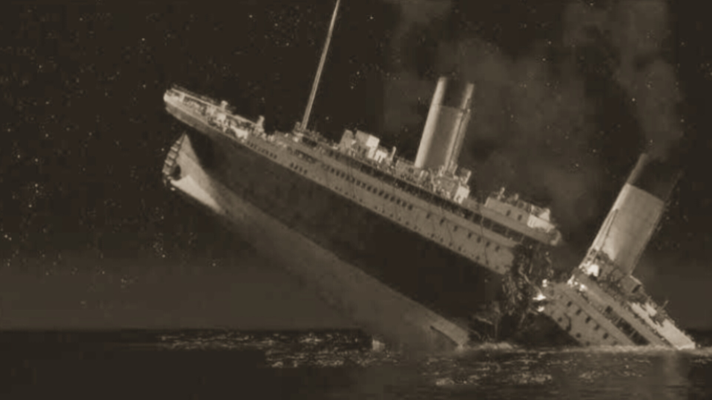

Navio RMS - Titanic
afunda no oceano
Dom. 14 de Abril de 1912

O RMS (Royal Mail Ship) Titanic partiu do porto de Southampton, na Inglaterra, rumo a Nova York em 10 de abril de 1912. Considerado um dos maiores navios da época, ele levava a bordo mais de 2.220 pessoas, entre passageiros e tripulantes.
No dia 14 de abril, quatro dias após a partida, o Titanic recebeu a primeira de seis mensagens alertando sobre a presença de icebergs em uma região próxima ao Canadá. Poucas horas depois, colidiu com um iceberg de cerca de 460 metros. O impacto partiu o navio ao meio, que afundou em aproximadamente 2 horas e 40 minutos no Atlântico Norte, resultando em cerca de 1.517 mortes.